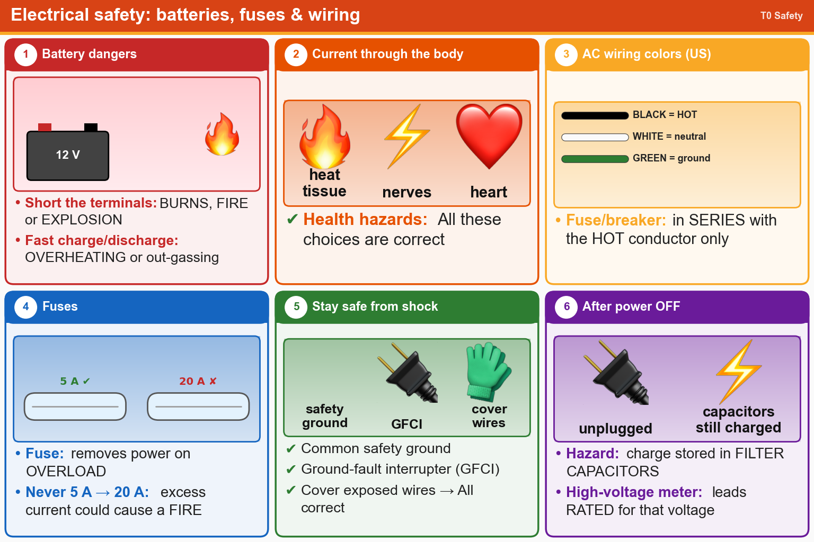

💡 Black wire = hot. Never replace a fuse with a bigger one. Capacitors stay charged after power-off.
Pick an answer for each question, then press Grade at the bottom.
T0A01
Which of the following is a safety hazard of a 12-volt storage battery that lacks internal protection circuitry?
✘A.RF emissions from a nearby transmitter can cause the electrolyte to emit poison gas
✘B.Touching both terminals with your hands can cause electrical shock
✔C.Shorting the terminals can cause burns, fire, or an explosion
✘D.All these choices are correct
T0A10
What hazard exists when rapidly charging or discharging an unprotected battery?
✔A.Overheating or out-gassing
✘B.Overvoltage
✘C.Electric shock
✘D.Excess output ripple
T0A02
What health hazard is posed by electrical current flowing through the body?
✘A.It may cause involuntary muscle contractions
✘B.It may disrupt the electrical functions of cells
✘C.It may cause injury by heating body tissue
✔D.All these choices are correct
T0A03
In the United States, what circuit does black wire insulation indicate in a three-wire 120 V AC cable?
✘A.Neutral
✘B.Equipment ground
✔C.Hot
✘D.Negative
T0A08
Where should a fuse or circuit breaker be installed in a 120V AC power circuit?
✘A.In parallel with the hot conductor only
✔B.In series with the hot conductor only
✘C.In parallel with the hot and neutral conductors
✘D.In series with the hot and neutral conductors
T0A04
What is the purpose of a fuse in an electrical circuit?
✘A.To limit current and prevent shocks
✘B.To prevent power supply ripple from damaging a component
✔C.To remove power in case of an overload
✘D.All these choices are correct
T0A05
Why should a 5-ampere fuse never be replaced with a 20-ampere fuse?
✘A.The larger fuse would be likely to blow because it is rated for higher current
✘B.The power supply ripple would greatly increase
✘C.Voltage drop in the higher current fuse could result in excessively low voltage to the device
✔D.Excessive current could cause a fire
T0A06
What is a good way to guard against electrical shock at your station?
✘A.Ensure all capacitors used for high-voltage DC are fully discharged before working inside equipment
✘B.Use three-wire cords and plugs for all AC powered equipment
✘C.Connect all AC powered station equipment to a common safety ground
✔D.All these choices are correct
T0A11
What hazard exists in a power supply immediately after turning it off?
✘A.Voltage transients from kickback diodes
✔B.Charge stored in filter capacitors
✘C.Leakage flux in the power transformer
✘D.Circulating currents in the dc filter
T0A12
Which of the following precautions should be taken when measuring high voltages with a voltmeter?
✘A.Ensure that the voltmeter has very low impedance
✘B.Ensure that the circuit is grounded through the voltmeter
✘C.Ensure that the voltmeter is set to the correct frequency
✔D.Ensure that the voltmeter and its leads are rated for use at the voltages being measured